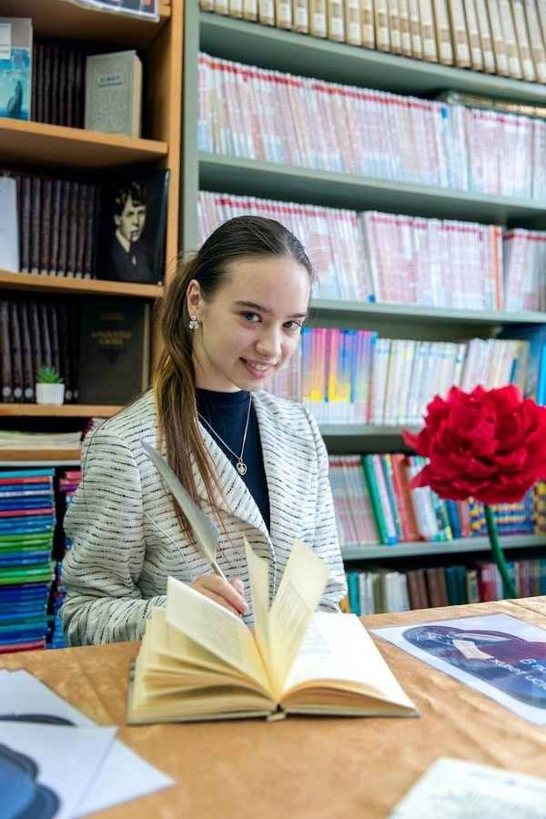
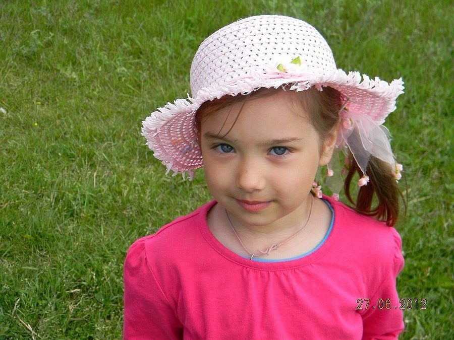
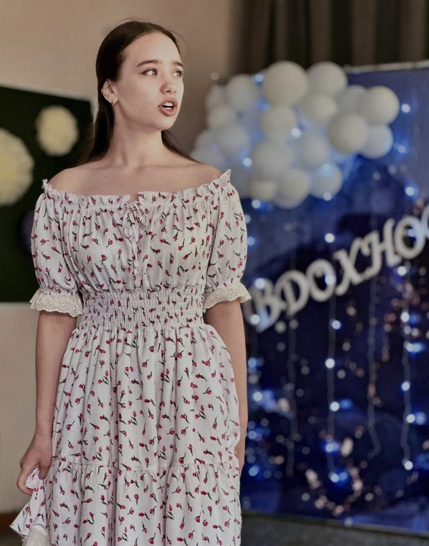
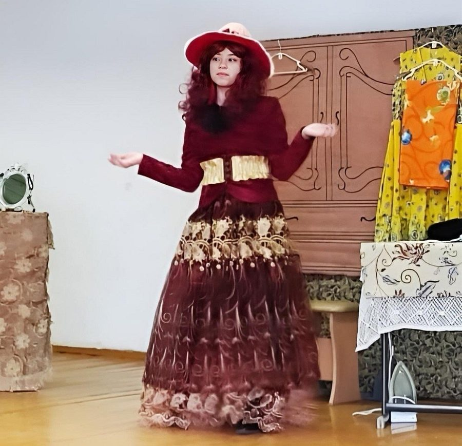

Стихи · Карелия · с 2022
Взгляд на жизнь через рифмы и строки.
О войне, о любви, о доме, где всегда кто-то маленький.

О себе
Родилась 5 мая 2007 года в небольшом карельском посёлке — старшая из четверых.
У меня есть брат Дмитрий и две сестры — Оля и Вера. Детство прошло здесь же: школа, кружки, дом, где всегда кто-то маленький. Я спокойный и неконфликтный человек, общительная, но друзей выбираю сама и надолго.
С начальной школы ходила в театральный, танцевальный и художественный кружки, рукодельничала, бралась за любое новое увлечение. Занималась социально-культурной деятельностью: помогала устраивать мероприятия, вела их, выступала как актриса и чтец. Училась прилежно, была активисткой и хорошо закончила одиннадцатый класс.
Поступила в вуз на актёрское мастерство, но через полгода забрала документы — поняла, что хочу другого. Сейчас готовлюсь в педагогический колледж, на учителя начальных классов.



Больше кадров — в телеграм-канале.